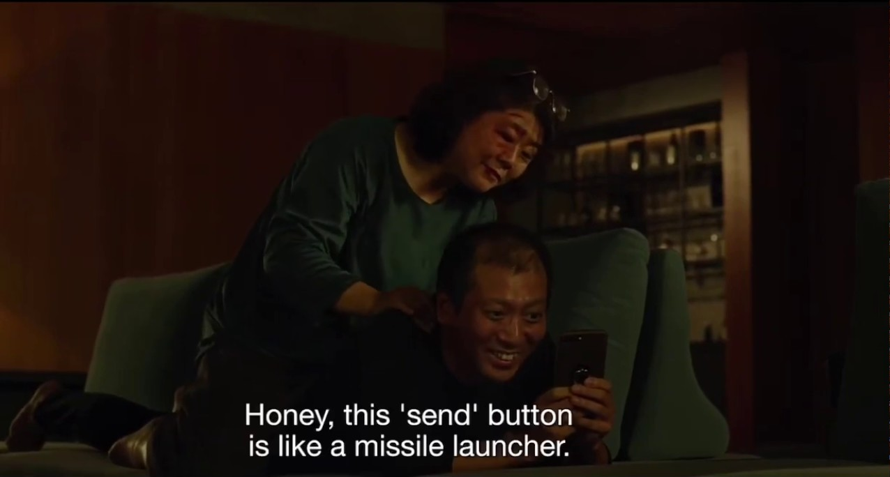
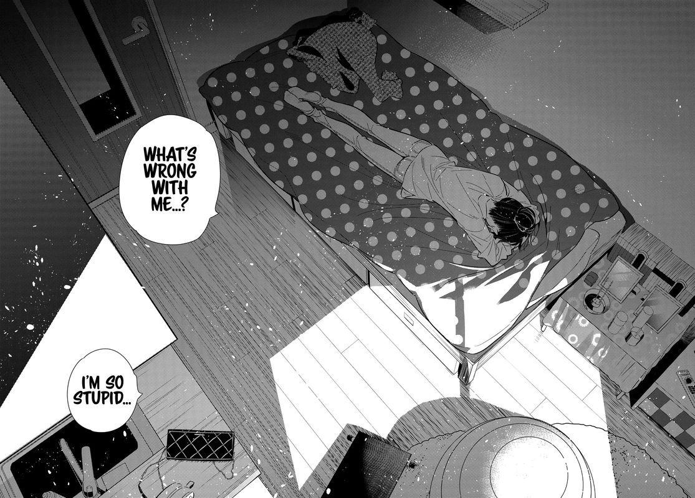

My eyes are burning today, even with glasses it's blurry, i think the reason is clear,
too much time into the monitor and no, isn't the brightness, when i reduce it is even worst because
my eyes need to focus even more to see, anyways, more important,
why im afraid of pressing a internet button
you see? i press this button and nothing happens!!!
why is that button so hard to press, i am afraid to screw it up

